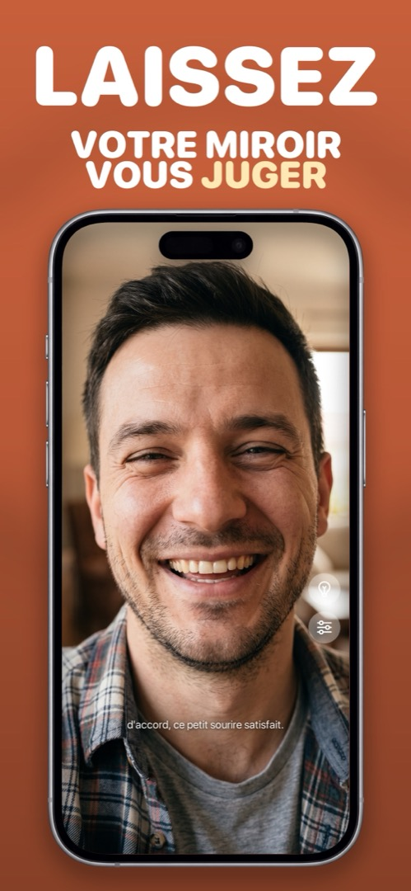

Miroir de poche oublié ? Utilisez celui qui est déjà dans votre poche
Vous fouillez votre sac et le miroir de poche n’y est pas. Il est sur l’étagère de la salle de bain, ou dans l’autre veste. Voici ce qui fonctionne quand il vous faut un miroir tout de suite — classé du désespéré au vraiment bon.
Les miroirs improvisés, classés
- L’écran de téléphone éteint. Verrouillez et inclinez. Ne marche qu’en pleine lumière sur fond sombre. Note : urgence.
- Une vitrine ou une vitre de voiture. Correct pour les cheveux et la tenue, sans espoir pour les détails, et vous le faites en public.
- Le miroir du pare-soleil. Acceptable si vous êtes en voiture. Généralement minuscule et sans lumière.
- Un verre de lunettes de soleil. Courbé, sombre, déformant. Toujours mieux que rien.
- La caméra frontale de votre téléphone dans une application miroir. Grand format, éclairé, zoomable, déjà dans la poche. C’est la réponse.
Téléphone contre poudrier
Une fois qu’on a utilisé la caméra frontale comme miroir, le poudrier commence à ressembler au compromis. L’écran du téléphone est plus grand que n’importe quel poudrier, il s’éclaire tout seul, il grossit, il ne se casse jamais dans le sac — et c’est le seul objet que vous n’oubliez vraiment jamais.
La seule chose qu’un poudrier fait et que l’app Appareil photo ne fait pas : ne pas prendre de photos. C’est là toute la différence entre Appareil photo et une application miroir : une application miroir n’a pas de déclencheur et n’enregistre jamais rien, alors vous pouvez vérifier vos dents vingt fois par jour sans photothèque pleine de preuves.
Comment faire dans Mirrorly
Mirrorly est le poudrier que vous ne pouvez pas oublier. Pour l’utiliser :
- Ouvrez Mirrorly. C’est un miroir plein écran dès le lancement.
- Touchez l’ampoule si vous êtes dans la pénombre ; glissez pour zoomer sur les dents ou les sourcils.
- Fermez et continuez votre journée. Pas de photo, pas de compte, rien d’envoyé.

Mirrorly arrive bientôt sur l’App Store.
Un miroir plein écran pour iPhone avec anneau lumineux, zoom et luminosité maximale. Trois vérifications gratuites, puis un achat unique — sans abonnement, sans photo enregistrée, sans compte, sans publicité.